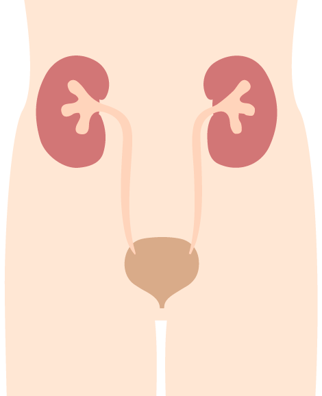

<!--
  Generated template for the WhatIskidneysPage page.

  See http://ionicframework.com/docs/components/#navigation for more info on
  Ionic pages and navigation.
-->
<ion-header class = "visual-header" no-border>

  <ion-navbar>
    <ion-buttons start>
      <button ion-button icon-only (click) = "openInformation()">
        
      </button>
    </ion-buttons>
    <ion-buttons end>
      <button ion-button icon-only (click) = "dismiss()">
        <ion-icon name = "close-circle" class = "close-icon"></ion-icon>
      </button>
    </ion-buttons>
    <ion-title>{{ 'WHAT_ISKIDNEYS.TITLE' | translate }}</ion-title>
  </ion-navbar>

</ion-header>


<ion-content padding>
  <ion-grid>
    <ion-row>
      <ion-col>
        <label class = "second-title">{{ 'WHAT_ISKIDNEYS.LABEL1' | translate }}</label>
        <ion-item no-lines class="item-img" >
          
        </ion-item>
        <label>
          <p>{{ 'WHAT_ISKIDNEYS.LABEL2' | translate }}</p>
          <p>{{ 'WHAT_ISKIDNEYS.LABEL3' | translate }}</p>
        </label>
      </ion-col>
    </ion-row>
  </ion-grid>

</ion-content>
